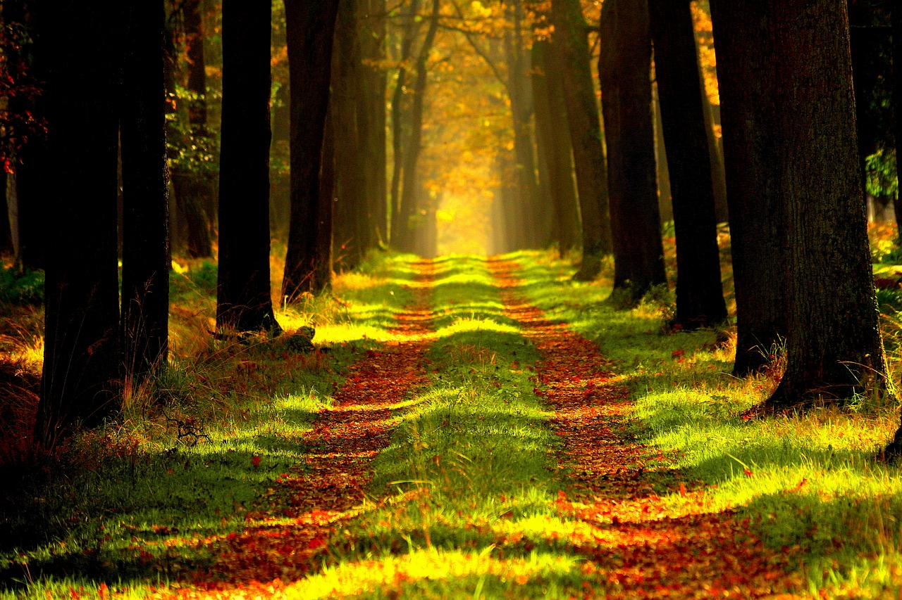
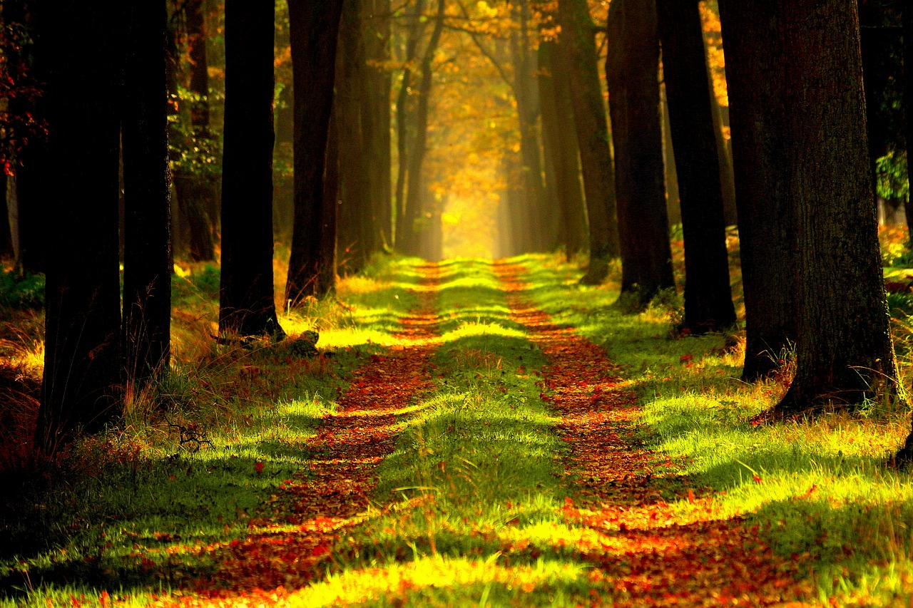
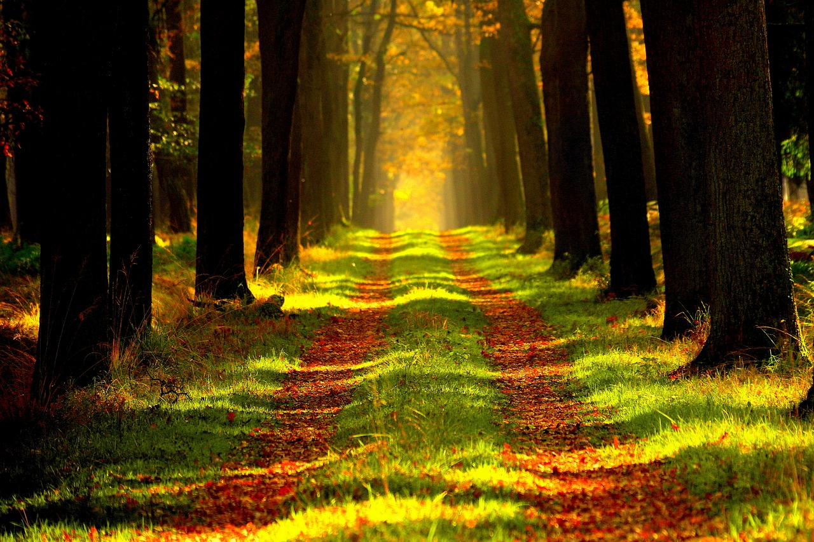

Şehirden uzaklaşmak isteyen ruhlar için doğanın renklerini, huzurunu ve zamansız güzelliğini yeniden tanımlıyoruz. WhiteDeer, sürdürülebilir üretim anlayışıyla doğaya saygı duyan, geçmişten ilham alan ve günümüzün modern dokunuşlarıyla harmanlanan giysiler sunar. Toprak tonları, derin yeşiller ve doğanın sakinliğini yansıtan renk kombinasyonları, gardırobunuza hem estetik hem de anlam katar.
WhiteDeer ile giydiğiniz her parça sizi doğaya bir adım daha yaklaştırır.

Ankara Üniversitesi Mühendislik Fakültesi Gölbaşı 50. Yıl Yerleşkesi, Bahçelievler Mahallesi, Gölbaşı/ANKARA
Sosyal medya hesabımıza resme tıklayarak ulaşabilirsiniz.